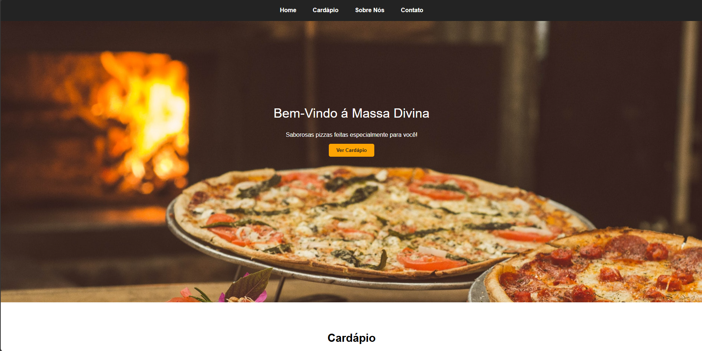

Oi, eu sou ü뮂Äçüíª
Raphael
Rodolfo
Desenvolvedor Fullstack
Código com propósito: acessível, moderno e cheio de impacto.
Tecnologias
Projetos


Sobre mim
Tenho 22 anos e sou natural de São Paulo. Concluí o ensino médio e atualmente estou cursando Análise e Desenvolvimento de Sistemas (ADS) na Unicesumar, sempre em busca de novos desafios e aprendizados. Atualmente, atuo como Desenvolvedor e Suporte de TI na empresa Gaya, onde coloco em prática meus conhecimentos e aprimoro minhas habilidades diariamente. A tecnologia é minha grande paixão, e estou constantemente explorando novas tendências e soluções para expandir meu domínio na área.